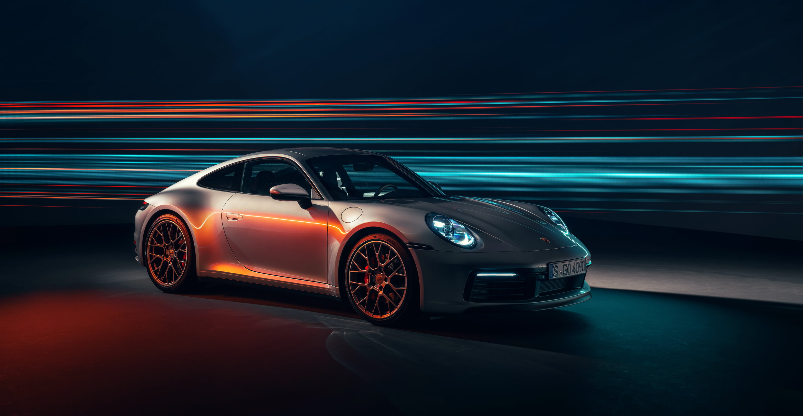
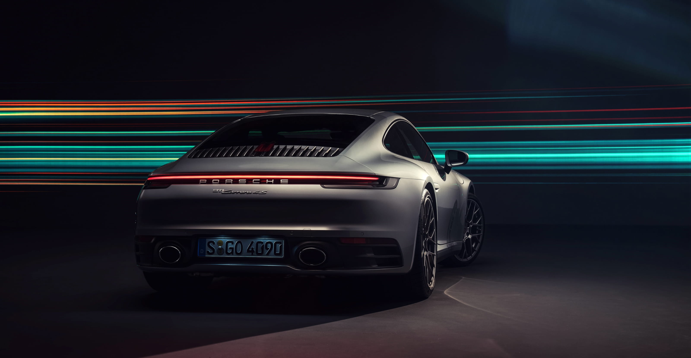
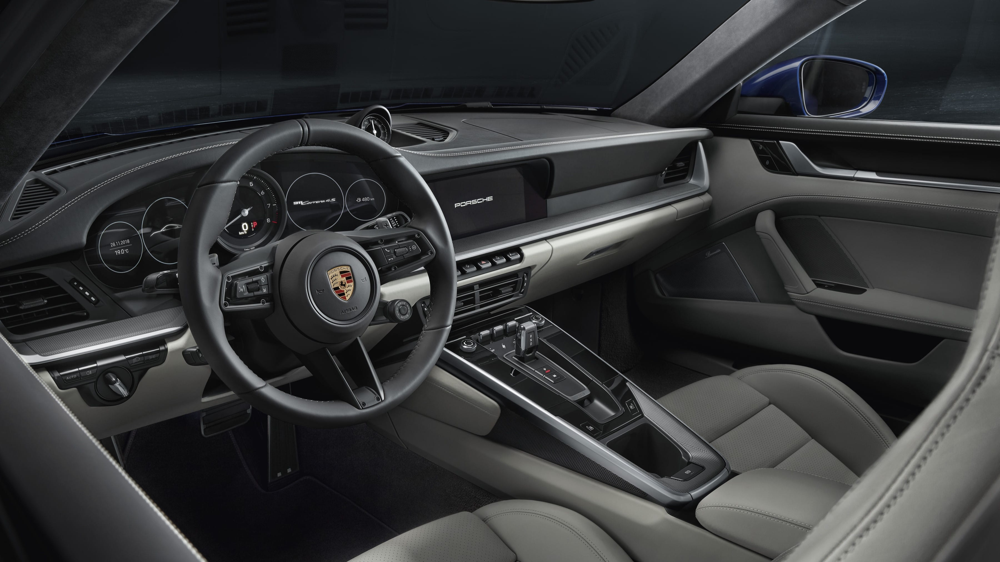

Porsche 911 Carrera 4S
Quando o contato com a pista se torna mais importante e a redução de cada quilo promete mais agilidade.
Menos quilos é igual a mais agilidade e o contato com a estrada é mais importante do que nunca. O 911 Carrera T é um compromisso com o purismo. Uma libertação consciente para o aumento do prazer de condução.
Emoções do automobilismo ao alcance de suas mãos.